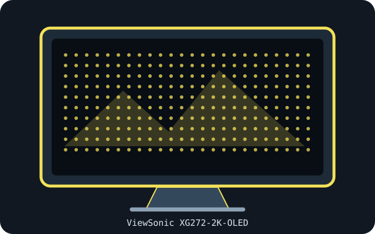

[ INDIVIDUAL COMPONENT // DISPLAYS ]
ViewSonic XG272-2K-OLED
26.5-inch QHD OLED gaming monitor with a 240 Hz refresh rate.

IDENTIFICATION: Confirm the complete model/SKU and region on the rear label. Specifications below reflect manufacturer-published information for this model family; input timings and power supplies may vary with source, firmware, region and operating mode.
Specifications
| Catalog subcategory | OLED displays |
|---|---|
| Exact product / family | ViewSonic XG272-2K-OLED |
| Panel technology / size | 26.5-inch OLED, flat, anti-glare, 16:9 |
| Native resolution | 2560 × 1440 |
| Native refresh rate | Up to 240 Hz at native resolution. |
| HDR / luminance / contrast | HDR10 support; ViewSonic lists 450 cd/m² typical brightness and 150,000:1 typical contrast. These are manufacturer ratings, not a promise of full-screen HDR luminance. |
| Inputs and I/O | 2 × HDMI 2.1; 2 × DisplayPort; USB-C with DisplayPort Alt Mode and 15 W PD; USB-A hub/upstream; 3.5 mm audio out. |
| Stand / VESA | Height-adjustable, tilt, swivel and pivot stand; VESA 100 × 100 mm. |
| Power | 24 V DC, 7.5 A adapter rating; actual typical monitor draw is separately rated at approximately 42 W without audio. Use the supplied/approved adapter only. |
Signal and compatibility notes
The 240 Hz mode requires an appropriate GPU and link timing; confirm the selected input's bandwidth in the specification sheet. USB-C video requires DP Alt Mode and provides only 15 W charging. Stand the white chassis on a stable surface and use the official VESA screw length; follow OLED image-retention guidance.
Native resolution and refresh depend on the connected computer's GPU, supported timing, port, cable, firmware, operating system and selected color format. Confirm capabilities in the model-specific manual rather than inferring them from connector shape alone.
OLED care and preservation
OLED panels can retain static imagery. Enable the manufacturer's panel-protection, pixel-shift and refresh features; follow on-screen prompts and documented care intervals. Avoid disconnecting power during a panel maintenance cycle, and record operating hours, firmware, calibration state and image condition for archival systems.
Manufacturer manuals & sources
- ViewSonic — XG272-2K-OLED official datasheetManufacturer-hosted model information; verify the exact regional SKU, revision, and current manual before installation.
- ViewSonic — official XG272-2K-OLED specifications and user guideManufacturer-hosted model information; verify the exact regional SKU, revision, and current manual before installation.